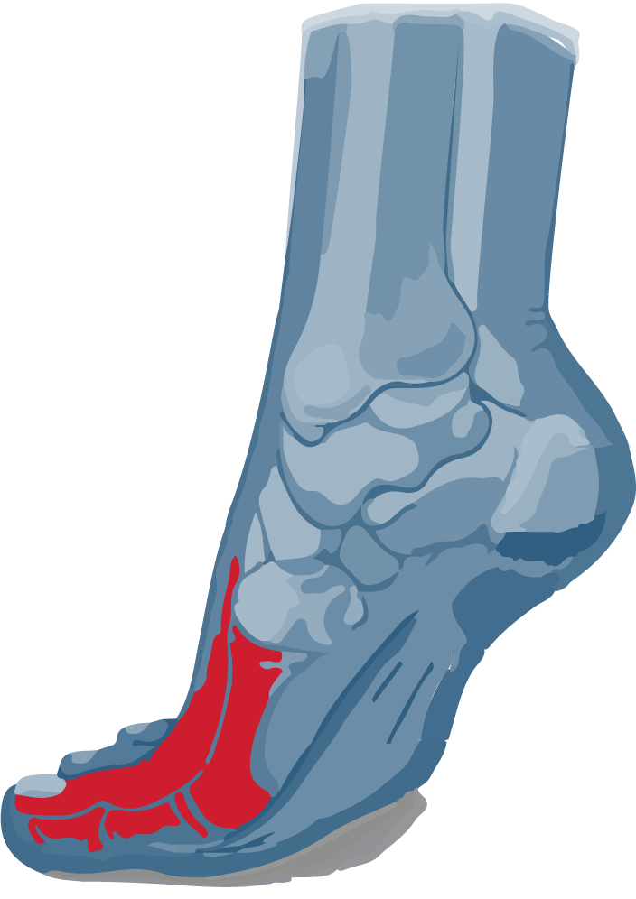

Casos Clinicos

Ulcera Pie Diabetico
Ulcera Vascular
Ulcera Por Presión
Otras ulceras
 Biotecnología para el tratamiento de las úlceras de pie diabético y otras heridas complejas
Biotecnología para el tratamiento de las úlceras de pie diabético y otras heridas complejas